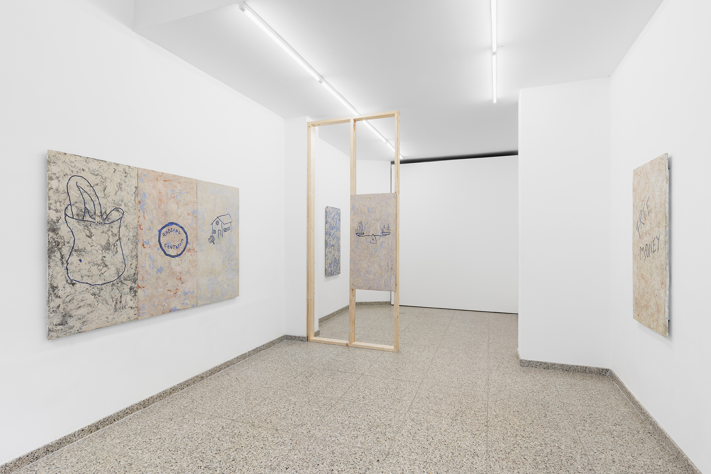
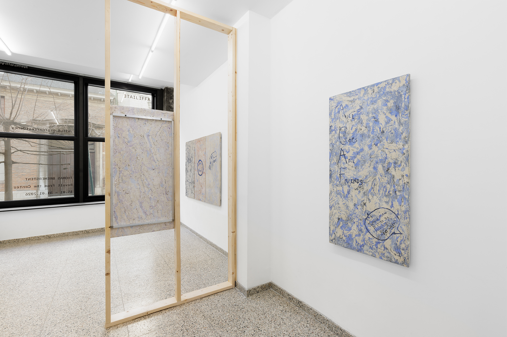
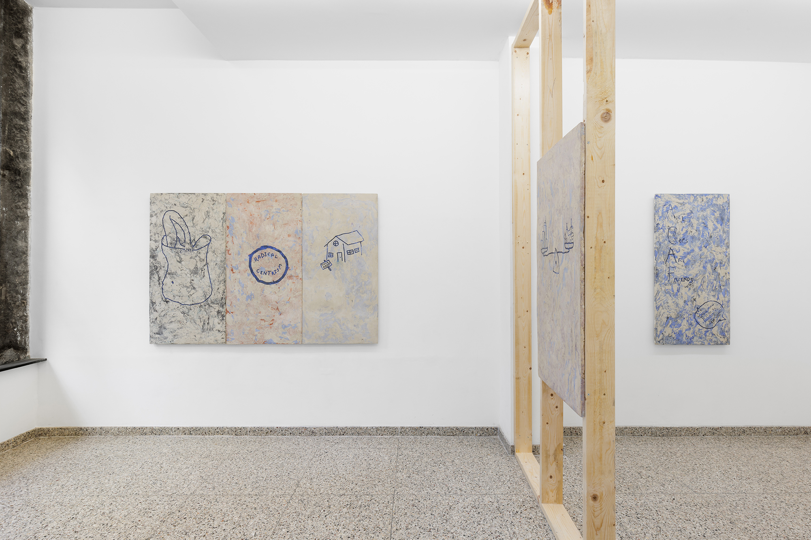
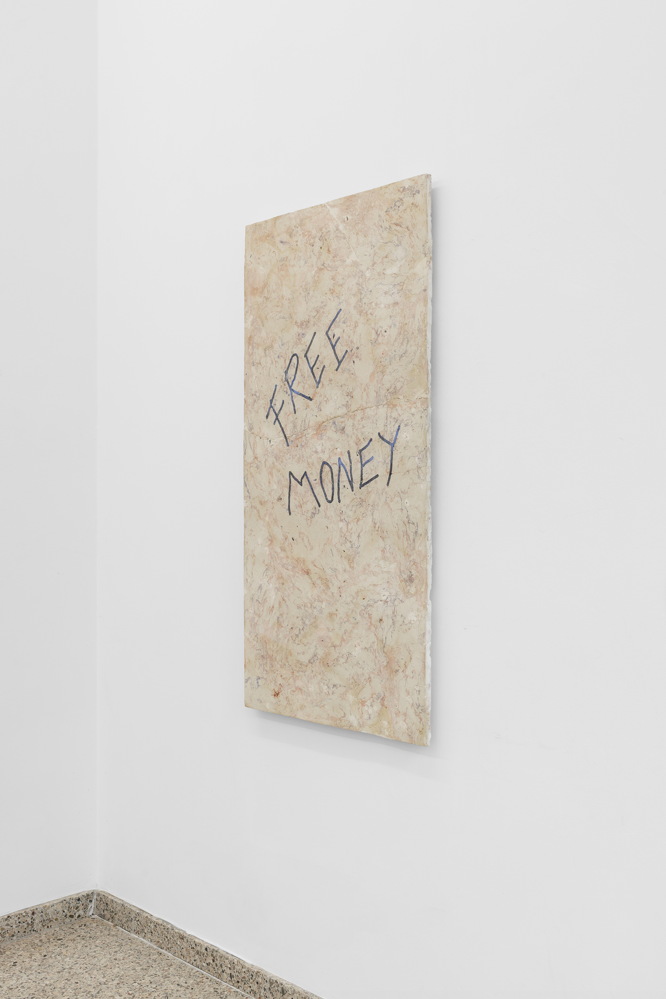
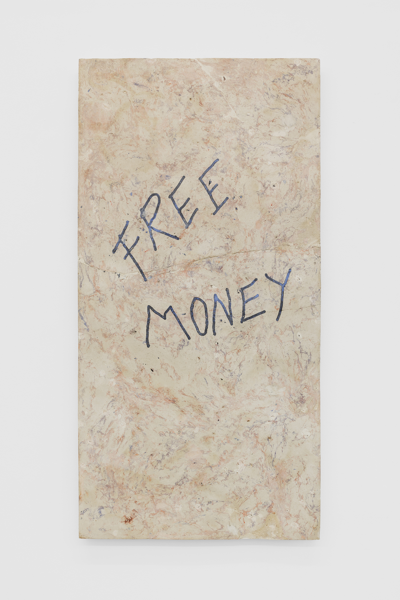
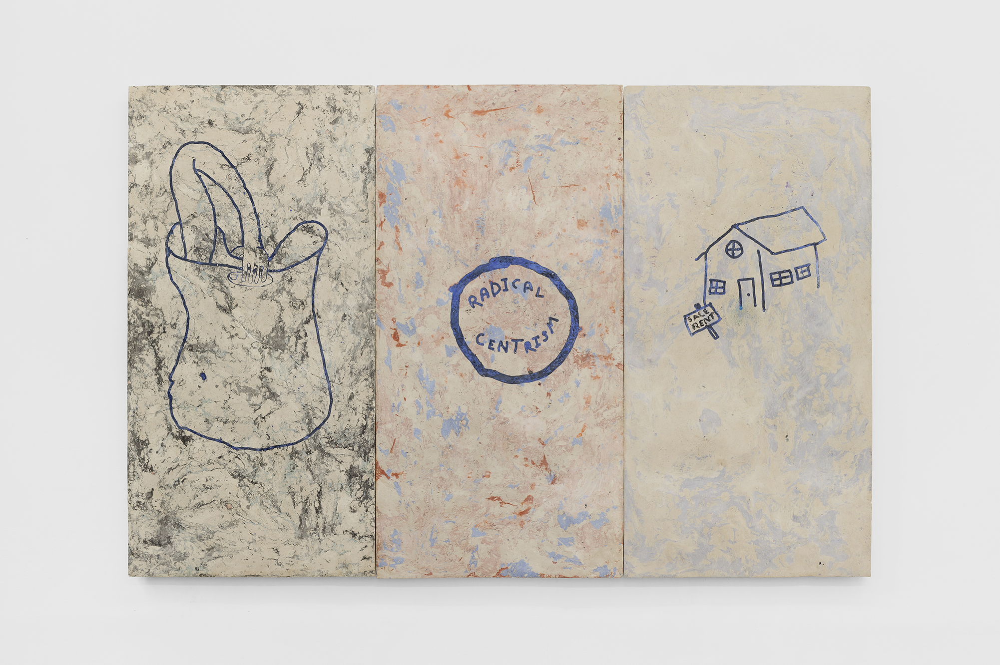
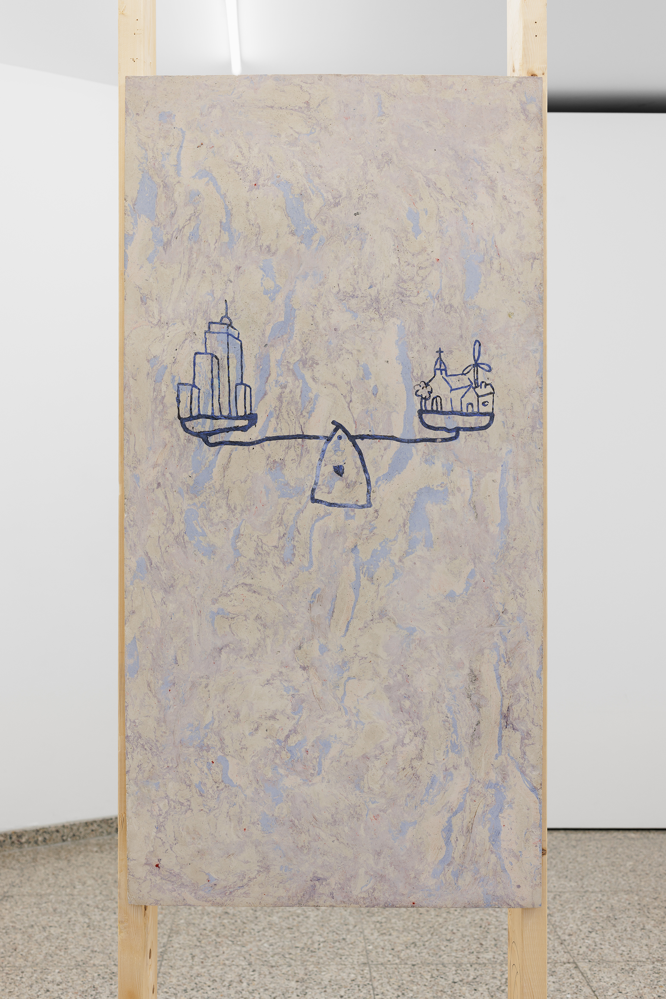

Revolt from the Center
AFFILIATE (WIELS), Bruxelles, Belgium
14.01. - 31.01.26

Revolt from the Center, 2026

Revolt from the Center, 2026

Revolt from the Center, 2026

Money, 2025, Gypsum, pigments, glue, linseed oli, aluminium, 120x60x4cm

Money, 2025, Gypsum, pigments, glue, linseed oli, aluminium, 120x60x4cm

Selvbærende Kommune, Rent 4ever & Radical Centrism, 2025, Gypsum, pigments, glue, linseed oli, aluminium, 120x60x4cm, 120x60x4cm & 120x60x4cm

Small City Big Village, 2025, Gypsum, pigments, glue, linseed oli, aluminium, 120x60x4cm

ACAF, 2025, Gypsum, pigments, glue, linseed oli, aluminium, 120x60x4cm
An insulated wall is built by first assembling a wooden frame flat on the floor, the wall is then raised into position and fully assembled. The work begins with measuring the dimensions of the wall. The height and length are marked.
Last summer on the Danish island Bornholm, I heard two middle-aged men, a Norwegian and a Dane, talking about the seventies and about how free and insane Denmark was compered to Norway at that time. In the conversation, the book Revolt from the Center* was mentioned. A book that proposed a new social system. They agreed that people all over Europe had read it. Basic income, but also something about voluntary youth work at the landfill.
I bought this book and planned to read it while building an insulated wall. I found the first chapters unbelievably boring, the ones dealing with the existing social system in Denmark in the 1970s. After 40 pages, I started skipping chapters.
The bottom and top plates of the wall are cut to length. They are laid parallel on the floor at a distance corresponding to height of the room. On both plates, the positions of the vertical studs are marked at a centre distance of 600 mm, matched to insulation measuring 55 cm. The studs are cut to length and placed between the plates. They are screwed in place while the structure lies flat. When the wooden frame is assembled, the wall is raised. It is adjusted to plumb and fastened to the floor, ceiling, and against existing walls.
Finally, the book reaches its vision of a sustainable society in the early 21st century. Basic income, self-sustaining municipalities, smaller cities and larger villages, no one owns, everyone rents, a society so good that there is almost no need for the police, all based on taut critique of ideologies ranging from the far left to the far right.
The insulation is cut to height and placed between the studs. Finally gypsum boards are installed on the wall.
*Revolt from the Center – Niels I. Meyer, Helveg Petersen & Villy Sørensen, 1978
Photo: Useful artservice
The exhibition was supported by OCA.